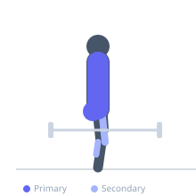
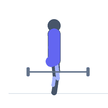

Exercise guide / Weighted Sandbag Shoulder Carry
Weighted Sandbag Shoulder Carry
The sandbag shoulder carry involves hoisting a heavy sandbag onto one shoulder and walking a prescribed distance, then alternating shoulders. The shifting, unstable load of the sandbag demands continuous core engagement to prevent lateral trunk collapse, making it a highly effective functional strength and conditioning tool that transfers directly to athletic and occupational performance. Unlike rigid implements, the sandbag's shifting contents require constant neuromuscular adjustments that challenge stabilizing muscles far more than a comparable barbell load.
Primary muscles
trapezius upper
erector spinae
gluteus maximus
Secondary muscles
vastus lateralis
gluteus medius
gastrocnemius medial
Stabilizers
internal oblique
external oblique
transverse abdominis
Equipment


Starting position
- The sandbag rests on the ground. Stand beside it in an athletic stance, hips back, chest up.
Setup
- Fill the sandbag to the target weight. Filler bags should be sealed. Begin with a sandbag at 25–40% of bodyweight for carry training.
Steps
- Step 1: Deadlift the sandbag from the floor to lap height, then hug it into the chest.
- Step 2: Rotate and load the sandbag onto one shoulder. The bag rests across the shoulder and upper back.
- Step 3: Hold the bag in place with the same-side hand and stabilize the torso upright. The opposite hand can be held out for balance.
- Step 4: Walk the prescribed distance with an upright posture. Resist lateral trunk lean.
- Step 5: At the midpoint or end of the distance, switch the sandbag to the opposite shoulder and return.
Coaching cues
- Resist the lean — stay tall and stack the shoulder over the hip
- Keep the core braced throughout — do not relax mid-walk
- Look ahead, not at the bag
Breathing
- Breathe short and regularly throughout the carry. Take a full bracing breath before the initial lift from the floor.
Range of motion
- Walk distance: 20–50 metres per set. Shoulder alternation: switch at the midpoint of each length.
Tempo
- 2–4 lengths of 20–25 metres per set, switching shoulders each length. Rest 2–3 minutes. 3–5 sets.
Common mistakes
- Allowing the torso to collapse laterally toward the loaded shoulder, overloading the QL and lateral trunk
- Rounding the back when picking up the bag from the floor
- Walking too fast and letting the bag shift uncontrollably
Safety
- Drop the bag to the side rather than forward if you lose control — do not fall with it
- Start with a lighter sandbag and build tolerance to the awkward loading before adding weight
Training
- strength: 1–4 reps
- endurance: 2–6 reps
- strength: 3–5 sets
- Rest: {'strength': 180, 'endurance': 120}